Introduction to topological data analysis - Lecture 01¶
- Welcome and formalities
- What is data analysis
- Statistical data analysis
- Geometric/topological data analysis
- Clustering
Contact info¶
| My name: | Dr. Julian Brüggemann |
| My office: | Center for New Technologies, Center of Trustworthy AI for Life Sciences (TRAILS), Dioscuri Centre in Topological Data Analysis |
| Stefana Banacha St. 2C | 02-097 Warsaw, |
| Office 2.47 | |
| My office hours: | upon request |
| My email address: | j.bruggemann@uw.edu.pl |
| Lecture: | Thursdays: 12:15-13:45 |
| Location: | MIMUW, Room 4050 |
| Exercise classes: | |
| Time: | Thursdays: 10:15-11:45 |
| Location: | Pasteura 7, Room P102 |
Course dates, homework, and exams:¶
Lecture period: 08.10.2026-21.01.2027 No lecture and exercise on 24.12. and 31.12.! (Christmas break)
How to pass the class:
Semester Project (50%): Either theoretical or applied.
For Master Students:
Theoretical: Prepare a presentation (20 min) on some theoretical topic, which is related to the content of the lecture together with a short (at most one two-sided page) supplementary text. -> must be presented during the exercise classes.
Applied: Prepare a presentation (20 min) on some data analysis method including shared commented code and a short (at most one page) supplementary text. -> must be presented during the exercise classes
For PhD students:
Same, but not only on contents of the lecture direcly but also on a research paper related to lecture contents.
Course dates, homework, and exams:¶
Oral exam (50%):
Exam/scientific conversation on the whole content of the lecture and exercises. You can start with your favorite theorem/method/algorithm/concept and we will take it from there.
Exam period: 26.01.-08.02. Resit period: 20.02.-01.03.
Homework: 2 excercises per week, can add bonus points to the Semester project grade (need to present at least one homework exercise in class). You can hand in homework in groups of up to 3 students.
Semester project topics:¶
Theoretical
- Theoretical guarantees via the nerve theorem (after lecture 2, to present until 12.11.26)
- Cellular Homology (after lecture 6, to present until 10.12.26)
- Persistence with integer coefficients (after lecture 6, to present until 10.12.26)
- The algebraic stability theorem (after lecture 8, to present until 07.01.27)
- Representation theory of quivers (after lecture 11, to present until 21.01.27)
- Zigzag persistence in theory (after lecture 11, to present until 21.01.27)
Applied:
- Stability of clustering algorithms (after lecture 2, to present until 12.11.26)
- Data visualization with mapper (after lecture 4, to present until 26.11.26)
- Runtime analysis of the simplex tree operations (after lecture 5, to present until 03.12.26)
- Witness complexes (after lecture 5, to present until 03.12.26)
- Topological time series analysis (after lecture 10, to present until 14.01.27)
- Multi parameter persistence in practice (after lecture 11, to present until 21.01.27)
Or your own proposal?
It is your responsibility to pick a topic in time, contact me about it, and deliver it until the deadline!¶
All course materials can be found under
What is data analysis?¶
- ``In God we trust, all others bring data." –William Edwards Deming (1900-1993)
What is data?¶
Collection of information that describe some phenomenon of interest.
Anything can be data, if it is interesting enough!
| Often measurments of some kind: |
|---|
| -physics: energy, momentum, location |
| -social sciences: Number of people of a certain group, answes to a poll, opinions, votes in elections |
| -often: data points are collections of numbers (or interpreted in that way: e.g. vectorization) |
| -special case: time dependent data - time series, i.e. values that change over time |
Want to find: patterns, meaning, general rules
Subcategories of Data Analysis¶
| Descriptive/Qualitative | Statistical/Quantitative |
|---|---|
| -summarize information | -investigate patterns/correlation |
| -make some part of the information easier to understand | -get a measurement of how much data sets differ |
| -visualization | -compute mean values |
| -selection of numbers | -evaluate how appropriate models are/how well a hypothesis fits the data |
Example: Election¶
Data set: {(Name, given name, ID/PESEL, voted party)}
Entries look like: {(Smith, John, 125634, A),(Mustermann, Max, 04124, B),(Kowalski, Jan, 2137, B),...}
Summary:
1.352.689 votes for party A
2.987.132 votes for party B
522.799 votes for party C
22.911 invalid votes
1.222.572 abstained from voting
Example: Election¶
Visualization:
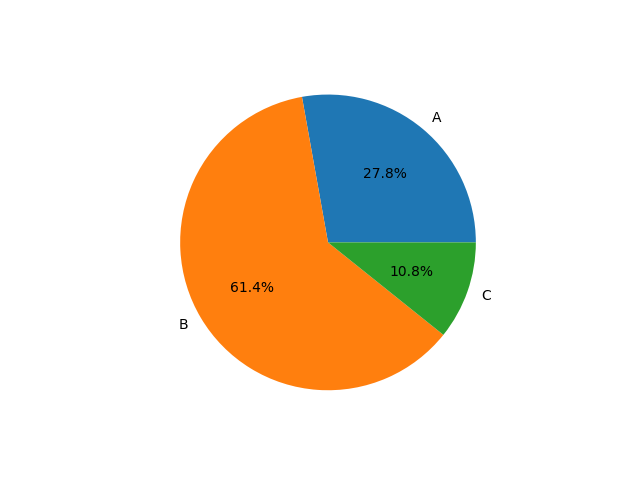
Example: Election¶
⇒ Party B has majority but not 23.
Problem: Does not explain why people voted like this. Does not explain who voted for whom.
Statistical Data Analysis¶
Example from physics: Look at a spring that has some weight attached to it.
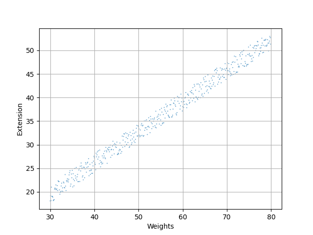
Assumes that the data is given by a linear equation: ^y=ax+b
Want to choose line such that distance to data points is minimized, i.e. assume that the deviation from this line is minimal and homogenous.
δy=yi−^y(xi)
Δy=1nn∑i=1(yi−^y(xi))
better: absolute or squared error
Δ||y=1nn∑i=1|yi−^y(xi)|
Δ2y=1nn∑i=1(yi−^y(xi))2
Formula for optimal estimates for least square regression:
a=1n∑ni=1(xi−¯x)(y(xi)−¯y)1n∑ni=1(xi−¯x)2 b=¯y−a⋅¯x
Linear regression¶
Example from physics: Look at a spring that has some weight attached to it.
Assume we have the dataset given as two arrazs called "weights" and "extensions":
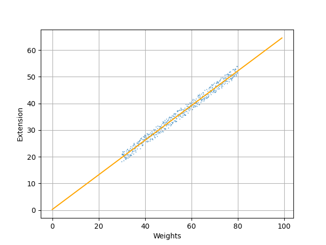
Obtain empirical Hooke's law: F=k⋅x.
Allows to make predictions, Allows to focus on parameter k to find better explanation.
Linear regression¶
Example from physics: Look at a spring that has some weight attached to it.
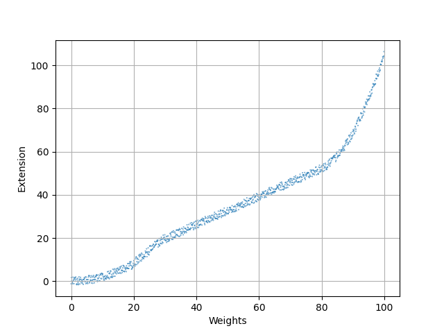
Problem: The model only fits the data for a certain range!
Linear regression¶
Example from physics: Look at a spring that has some weight attached to it.
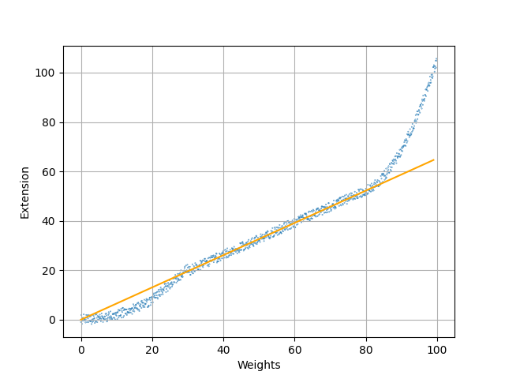
Problem: The model only fits the data for a certain range!
⇒ Empirical laws are only valid for the circumstances in which they were found. Be careful with predictions!
Mathematical/Statistical models¶
What is a model actually?
A model contains:
-a mathematical description of a phenomenon/observation/...
e.g. (linear/polynomial/differentiable/differential) equations, parameters, and variables.
-assumptions and constraints under which the model is supposed to be accurate
In the example: linear model (i.e. linear equation)
parameter: spring constant
variable: weight/force
predicted quantity: string expansion
constraints: only holds in the "elastic range"
Advantages of models¶
-efficient computation/empirical determination of coefficients and parameters for linear models
-provide precise predictions
-accuracy can be easily checked using statistics
Disadvantages of models¶
-models are not flexible
-a priori, no way of knowing which model might be accurate
-fitting models is prone to combinatorial explosion if they have too many parameters/coefficients.
Comparing data sets¶
Once we have choses a model or a statistic, we want to know how well it describes our data set and how it helps us to distinguish different data sets.
Two approaches: Inference vs. Frequency based
Inference: Want to be able to evaluate whether the statistic observed indicates an actual difference or may be a result of some probability distribution.
→ test a nullhypothesis and decide whether to accept or reject it.
Frequency: Compare relative number of occurences of events in order to see if there is a possible overlap of statistics or not.
→ compute confidence intervals and discuss if/how much they overlap.
Basics from probability theory¶
Definition:
A probability space is a triple (Ω,F,P) with a set of outcomes Ω, a collection of events F and a probability measure P.
A random variable is a measurable function X:Ω→E, where E is a measure space.
A probability distribution is the pushforward measure of P on E induced by X.
Often: E=R or Rn.
A probability mass/density function is a function f:E→R such that the probability distribution is given by the sum/integral of f.
A random process is a collection of random variables on a common probability space with the same target space.
A sample is a single outcome of a random process.
Hypothesis testing¶
- Pick a (1-dim) statistic that describes your data set, e.g. mean value, median, slope of regression line, etc.
- Set up null hypothesis H0: the two data sets are sampled from the same distribution
- Specify the random process that is supposed to have created the data, i.e. specify a conjectured probability distribution in detail, called the null distribution
- Compute the probability that, assuming the null hypothesis is true, the difference in the chosen statistic is at least as extreme as the measured one:
p(xobs):=PH0(X≥xobs) This is called the p-value.
- If the observed statistic is too unlikely, we reject the null hypothesis and say that the difference is statistically significant. Common practice: reject if p<0.05
Warning: The p-value is not the probability that the null hypothesis is true. The data must come from a random process in order for the p-value to be relevant. The p-value always relies on assumptions on how your data was created ⇒ always consider how exactly the specific measurements were made. Also, always report the p-value and not only whether it is above or below 0.05!
Expectation, variance and covariance¶
Let X be a random variable. Its expected value E(X) is defined as E(X)=∞∑i=1xi⋅P(xi) for X discrete and as E(X)=∞∫−∞x⋅f(x)dx for X continuous.
The variance of X Var(X) is defined as Var(X)=E[(X−E(X))2]
Let X,Y be random variables. The covariance of X and Y cov(X,Y) is defined as cov(X,Y)=E[(X−E(X))(Y−E(Y))]
The normal distribution¶
Given two parameters μ,σ2, the normal distribution/Gaussian distribution has the probability density function
f(x)=1√2πσ2e−(x−μ)22σ2
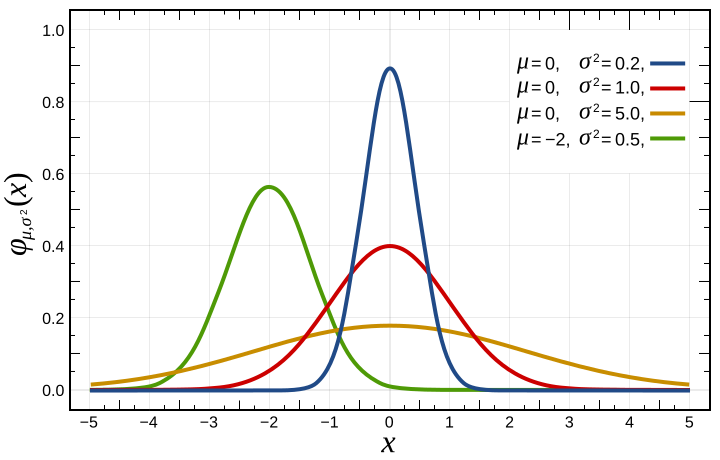
By Inductiveload - Own work (Original text: self-made, Mathematica, Inkscape), Public Domain, https://commons.wikimedia.org/w/index.php?curid=3817954
Confidence intervals¶
Basic idea: based on the data, find an interval (V1,V2) such that for a parameter θ we are trying to estimate, the probability P(V1≤θ≤V2) has a certain prescribed value usually P(V1≤θ≤V2)=0.95.
One approach: Central Limit Theorem:
Let {X1,…,Xn} be a sequence of indipendent identically distributed random variables, having a distribution with expected value μ and finite variance σ2 and denote the sample average by ¯Xn=n∑i=1Xin.
Then the random variable √n(¯Xn−μ) converges to a normal distribution with expected value 0 and variance σ2.
Confidence intervals¶
⇒ if the sample size is "big enough", we can compute the confidence interval assuming a normal distribution:
Estimate true value by sample mean ¯xn, variance given by sample variance: σ2n (estimated via σ2=∑ni=1(xi−¯x)2).
Then we have P(¯X−1.96σ√n≤μ≤¯X+1.96σ√n)=0.95 because ¯x−1.96σ√n is the 0.025 quantile and ¯x+1.96σ√n is the 0.975 quantile, i.e. 95% of the measured values lie between them.
⇒ Having computed that for two data sets, we can discuss how much their confidence intervals overlap in order to discuss how likely it is that they are different.
Limits of models¶
Linear regression revisited¶
Can also use linear regression in higher-dimensional setting.
Problem: Sometimes some of the variables/parameters may be highly correlated or even linearly dependent!
Definition Let X,Y be random variables. Their correlation coefficient corr(X,Y) is defined as corr(X,Y)=cov(X,Y)√Var(X)Var(Y)
→ there may not exist a unique solution to estimating the parameters but rather a space of solutions. Due to measurement error, one solution from this space is picked but it might not be the ideal one.
One way to adress this: ridge regression
slightly modify the estimator by adding an additional term: instead of minimizing
||Y−Xα||
we minimize
||Y−Xα||+λ||α||
More about this in the exercises!
Same mean, same standard deviation, same regression line
Limits of models¶
Datasaurus dozen
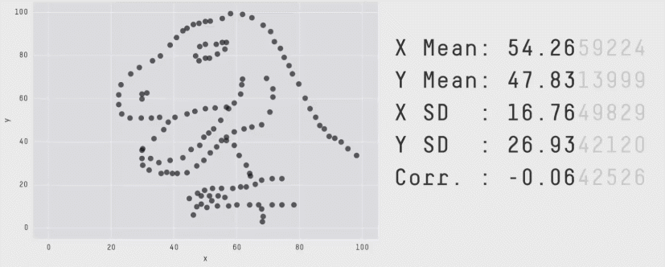
Credit: Alberto Cairo, Justin Matejka and George Fitzmaurice: https://itsalocke.com/datasaurus/
⇒
-Always visualize your data set!
-Need new tools to capture geometric phenomena, especially if visualization is not possible.
Geometric/Topological Data Analysis¶
Want to keep track of additional features: geometry and topology.
- Approximation of shape
- Topological invariants
- Comprehensible descriptors of geometry and topology
- Statistics on those or visualization
Manifold hypothesis¶
In many fields of science: phenomenea described by differential equations
⇒ solutions lie on manifolds subject to these equations
Manifold hypothesis: Data points are sampled around manifolds. Often, the dimension of the manifold is much lower than that of the ambient space.
Motivational example: Diabetes study¶
Data: various blood values from people who were given a sugar-solution
Method: Projection Pursuit (Try out various projections to lower dimensional spaces and see what you see)
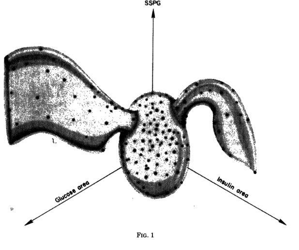
Sphere: healthy patients, Wings: Type 1 and Type 2 diabetes
Point Clouds¶
Typical example of data: collection of real numbers that describe a phenomenon under investigation
→ finite collection of points X⊂Rn.
We call X a point cloud.
Point clouds as finite metric spaces¶
For a finite set X⊂Rn, we can restrict the ambient metric to X
→ turn X into a finite metric space.
We can store the distances more conveniently in the distance matrix:
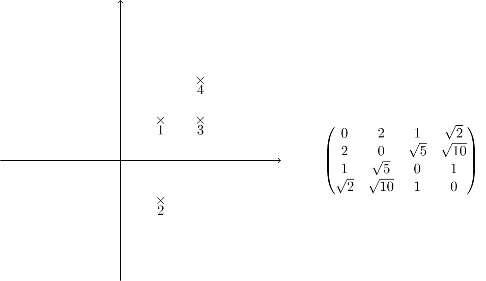
Curse of dimensionality¶
Point clouds being contained in high-dimensional ambient spaces lead to certain problems:
Concentration of measure:
Consider the volume of the standard n-cube:
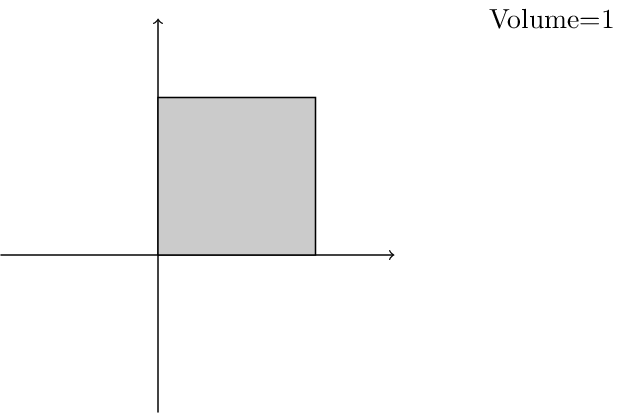
The curse of dimensionality¶
Concentration of measure:
Consider the volume of the standard n-cube:
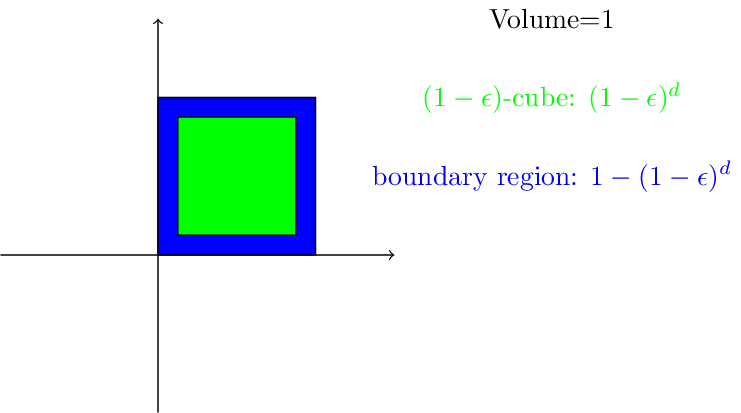
The curse of dimensionality¶
Concentration of measure:
Consider the volume of the standard n-cube:
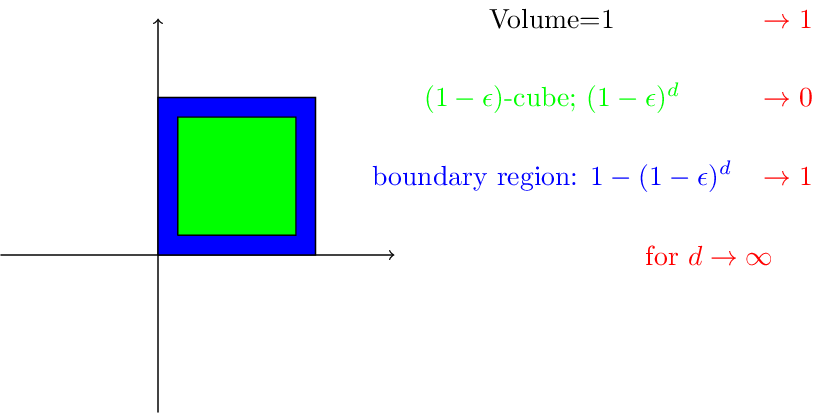
The curse of dimensionality¶
Concentration of measure:
-Volume is concentrated in the boundary. Small changes in radius lead to high changes in number of needed sample points
-Measurement error gets more significant than structure of manifold
→ highly non-trivial issue. Need either dimension reduction techniques or different notion of distance.
Clustering¶
Classification technique: want to group collections of points together that are not significantly different from one-another.
Hard clustering (actual partition) vs soft clustering (points belong to a cluster with a certain probability)
Usually intermediate step of further analysis
Clustering techniques we want to focus on
-hierarchial clustering (in particular single-linkage)
-centroid based clustering (in particular k-means)
-density based clustering (in particular DBSCAN)
-classification based (in particular k-nearest-neighbors)
Hierarchial clustering:¶
Want to organize the data points in a hierarchy of clusters. → obersve clusters on different scales.
Two basic approaches:
-Agglomerative (bottom-up) - start with one-point clusters and iteratively join clusters with minimal distance
-Divisive (top-down) - start with one cluster and divide according to maximal distance between clusters
Usually agglomerative approach is preferred due to better runtime (naive O(n3)/optimized O(n2log(n)) versus O(2n) for divisive).
Single linkage clustering¶
Assume data is given as a distance matrix D. We define a sequence of clusters, where each cluster c has a (hierarchial) level f(c).
1: begin with clusters of size 1, all of them of level f(c)=0, set iteration number to m=0.
2: find the pair of clusters ci,cj with minimal distance Dij among all inclusion-maximal clusters with level <m.
3: Increment itereation number m=m+1. Then merge ci∪cj, set f(ci∪cj)=m
4: Update the distance matrix by removing the the columns corresponding to ci and cj and adding a new row and column for ci∪cj by the formula d(ci,cj)=mina∈ci,b∈cjd(a,b).
Single linkage clustering¶
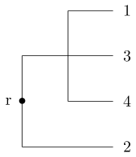
Centroid based clustering¶
Try to find landmark points λi (not necessarily part of the data set) such that the clusters are defined by assigning each data point to its closest landmark point.
Problem: How to find the landmark points? How many should it be?
One solution: k-means clustering - creates k clusters of points that are centered around k landmark points
1: randomly pick k landmark points λ1,…,λk
2: compute the the clusters c1,…,ck by assigning each data point to its closest landmark point
3: Compute new landmark points λi given by the center points, i.e. mean value wrt all coordinates, of the clusters ci.
Alternate between 2 and 3 until you are happy with the clusters.
Fact: The within cluster sum of squares decreases monotonously with this process.
⇒ k-means clustering converges to a locally optimal clustering. (Whether it is globally optimal depends on initial random choice of landmark points.)
k-means clustering¶
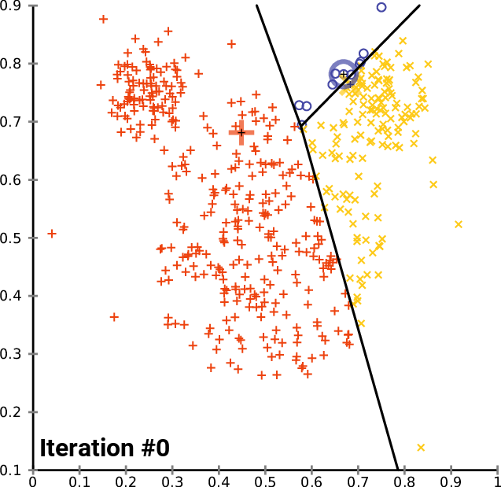
By Chire - Own work, CC BY-SA 4.0, https://commons.wikimedia.org/w/index.php?curid=59409335
Density-Based Spatial Clustering of Applications with Noise¶
General idea: seperate data set in three categories depending on the two parameters ϵ and minPts:
Core points: there are at least minPts points in within distance ϵ Boundary points: they are not core points but lie in at most distance ϵ of a core point Outliers: They are more than ϵ away from any core point
The clustering is created as follows:
- Identify the number of points within distance ϵ of each data point → identify core points
- Say a point q is directly reachable from a core point p if d(p,q)<ϵ. Assing core points that can be reached from another to the same cluster.
- Add boundary points to a cluster from which they can be reached.
- Declare the remaining points to be outliers.
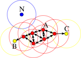
minPts=4
By Chire - Own work, CC BY-SA 3.0, https://commons.wikimedia.org/w/index.php?curid=17045963
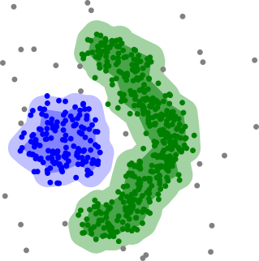
By Chire - Own work, CC BY-SA 3.0, https://commons.wikimedia.org/w/index.php?curid=17085332
k-nearest-neighbors algorithm¶
Rough idea: assign a certain feature to data points depending on the feature value of their k nearest neighbors
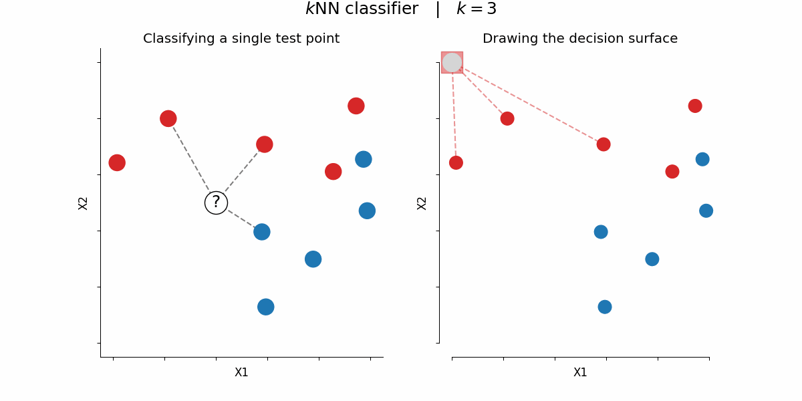
By Paolo Bonfini - Own work, CC BY-SA 4.0, https://commons.wikimedia.org/w/index.php?curid=150465667
k-nearest-neighbors algorithm¶
For clustering: choose the sum of squares among the k nearest neighbors as the feature and choose the clustering with the smallest overall sum of those. → create clusters of k points with minimal sum of cluster sums of squares.
Can also obtain soft/fuzzy clusterings this way by allowing weighted overlap.
Validation of obtained clusters¶
Want to make sure that the result of a clustering algorithm "fits the data".
Remark: There isn't one number that can decide whether a resulted clustering is good or bad, we can only study certain aspects.
If available: External validation - compare clusters to ground truth (usually defies the need of a clustering)
→ focus on internal methods - evaluate quality of clusters with respect to desireable heuristics
- Silhouette analysis
- Density-based cluster validation (DBCV)
Silhouette analysis¶
Idea: compare distance to other cluster points to the distance to other clusters
Let CI be a cluster and let i∈CI be one of its data points. Then we define:
a(i)=1|CI|−1∑j∈CI,j≠id(i,j) and b(i)=minJ≠I1|CJ|∑j∈CJd(i,j) where CJ is any other cluster.
Moreover, we define the silhouette coefficient
s(i)=b(i)−a(i)max{a(i),b(i)} if |CI|>1 and s(i)=0 else.
We have −1<s(i)<1. The bigger the value s(i), the more appropriate it is to assign i to CI.
Density-based cluster validation (DBCV)¶
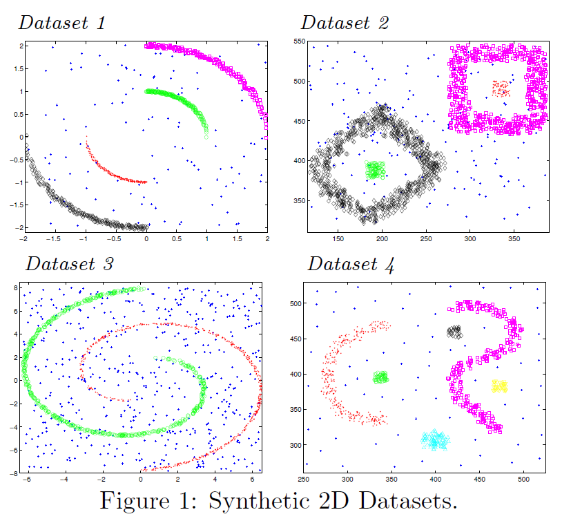
Density-based cluster validation (DBCV)¶
Idea:
- Use the core distance (~inverse of density) to compute mutual reachability distance to construct minimal spanning trees of the clusters
Let p∈Ci, |Ci|=ni, and let KNN(p,j) be the distance between p and its jth nearest neighbor. Then define the all points core distance
aptscoredist(p):=⎛⎜ ⎜ ⎜ ⎜⎝ni∑j=2(1KNN(p,j))dni−1⎞⎟ ⎟ ⎟ ⎟⎠−1d
For p,q∈X, p∈Ci,q∈Ci′ define the mutual reachability distance
dmreach(p,q):=max{apts(p),apts(q),d(p,q)}
For a cluster Ci The *Mutual reachability distance graphG(C_i)isthecompleteweightedgraphonC_i$, where the weight is given by the mutual reachablitiy distance.
We denote the minimum spanning tree of G(Ci) by MSTmrd(Ci).
Density-based cluster validation (DBCV)¶
- Use minimal spanning trees to define Density Sparseness and Density Separation of clusters and use this to define a validity index
The The Density Sparseness of a Cluster (DSC) Ci is defined as the maximum edge weight of the internal edges in MSTmrd(Ci) of the cluster Ci.
The Density Separation of a Pair of Clusters (DSPC) Ci and Cj , i≠j, is defined as the minimum reachability distance between the internal nodes of MSTmrd(Ci) and MSTmrd(Cj).
We define the validity index of a cluster by
VC(Ci):=minj≠i(DSPC(Ci,Cj))−DSC(Ci)max(minj≠i(DSPC(Ci,Cj)),DSC(Ci))
The validity index of a clustering C={Ci} is defined as the weighted average of the validity index of all clusters C.
DBCV(C):=∑i|Ci||X|VC(Ci)
→ takes values between −1 and 1, higher values indicate better density-based clusterings.